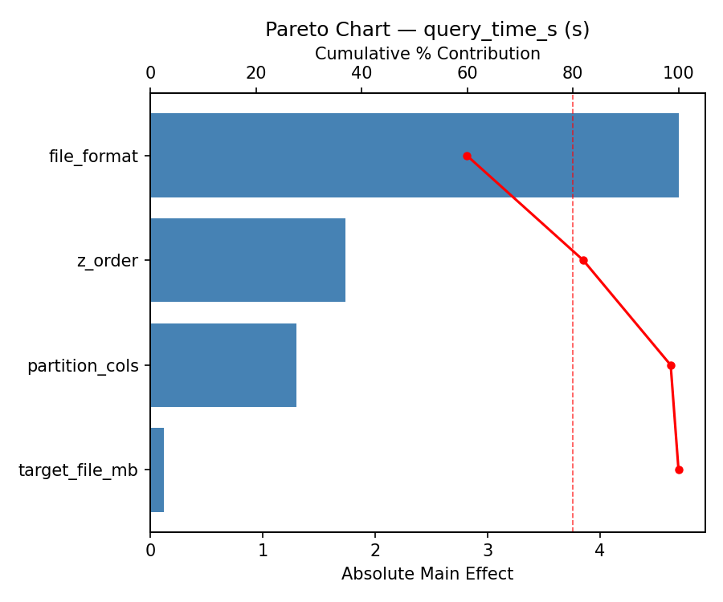
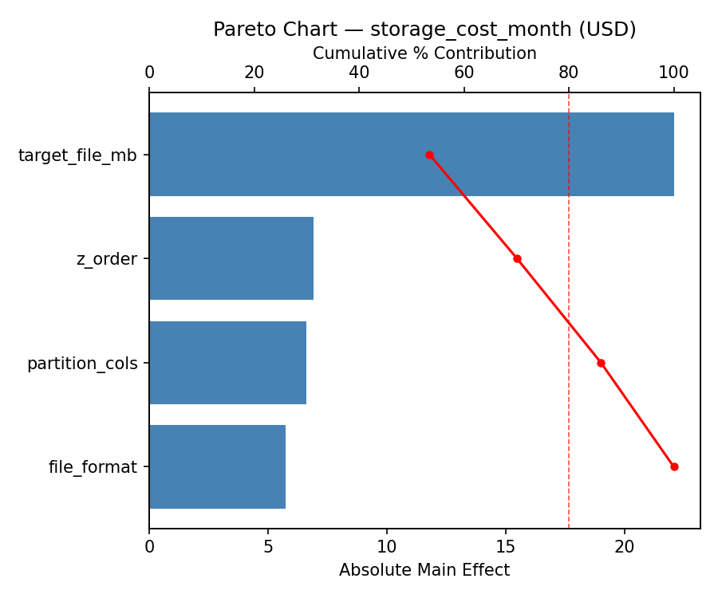
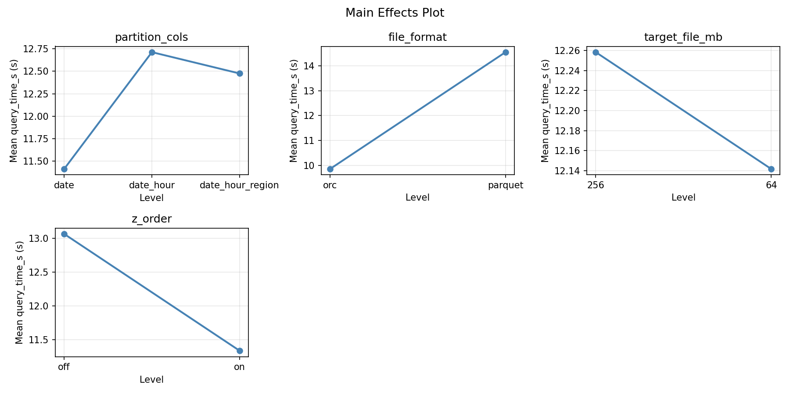
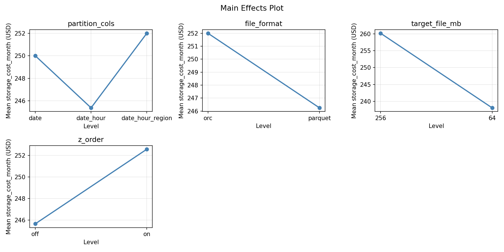

Full factorial of partitioning strategy, file format, and compaction for query speed and storage cost
| Factor | Low | High | Unit |
|---|---|---|---|
partition_cols | date | date_hour_region | |
file_format | parquet | orc | |
target_file_mb | 64 | 256 | MB |
z_order | off | on |
Fixed: table_size_tb = 5, retention_days = 90
| Response | Direction | Unit |
|---|---|---|
query_time_s | ↓ minimize | s |
storage_cost_month | ↓ minimize | USD |
| Feature | Value |
|---|---|
| Design type | full_factorial |
| Factor types | categorical, continuous |
| Arg style | double-dash |
| Responses | 2 (query_time_s ↓, storage_cost_month ↓) |
| Total runs | 24 |
Generated from actual experiment runs using the DOE Helper Tool.
pareto query time s

pareto storage cost month

main effects query time s

main effects storage cost month
